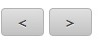
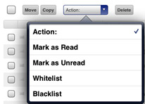
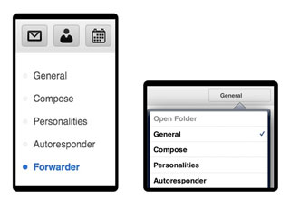
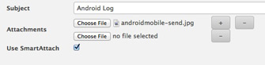

Interface tablette du WebClient
L'interface tablette du WebClient est optimisée pour les écrans tactiles. C'est l'interface proposée par défaut pour des navigateurs Safari sur iPad, Chrome sur des tablettes Android ou Silk sur Kindle fire.L'interface tablette n'utilise pas de JavaScript et de ce fait, elle est compatible avec des versions anciennes des navigateurs qui ne peuvent pas supporter le WebClient. Toutes les opérations peuvent être effectuées avec le seul clic gauche de la souris et d'autres éléments standards comme cases à cocher, boutons et menus déroulants. Il y a ni menus contextuels ni des fenêtres pop-up.
Tap

La barre d'outils avec des icônes fournit un accès convivial et tactil à toutes les fonctions principales de messagerie et de groupware. La fonction courante est indiquée par des icônes de couleur dans le menu de haut.
- Carnet d'adresses
- Calendrier
- Tâches
- Notes
- Fichiers
Pour recevoir les nouveaux messages, cliquer sur l'icône de l'enveloppe en haut de l'écran.

Pour composer un nouveau message, créer un nouveau contact ou liste de diffusion, créer un nouveau rendez-vous, créer une nouvelle tâche, créer une nouvelle note ou ajouter un nouveau fichier, cliquer sur l'icône correspondante dans le menu de haut et ensuite cliquer sur le gros bouton coloré "Nouveau ...".
Seule l'heure est affichée pour les messages du jour. Pour les autres messages, seule la date est affichée. Pour visualiser l'heure et la date, passer la souris sur l'élément. Pour voir tous les en-têtes, cliquer sur le bouton "Détails".
Rotation

La vue horizontale affiche tous les dossiers favoris au format liste dans le bandeau gauche. Le dossier courant est indiqué en gras. Pour afficher plus de dossiers à cet endroit, utiliser le menu "Gestion des dossiers". Dans la position verticale, le contenu du dossier courant ets présenté en liste. Cliquer sur le bouton en haut à droite portant le nom du dossier courant pour accéder aux autres dossiers et à la "Gesion des dossiers".

L'option "Gestion des dossiers" permet d'ajouter un dossier pour un accès direct. Il propose également les fonctions d'ajout, de suppression, de renommage des dossiers ainsi que de définir un dossier comme le défaut de sa catégorie.
Détection de gestures

La détection de gesture est supportée dans toutes les vues (liste d'emails, de contacts, des rendez-vous...). Cela permet d'avancer ou de reculer dans la liste comme pour tourner les pages d'un livre:
Page suivante: de droite à gauche
Page précédente: de gauche à droite

Les contrôles de pagination à droite (en haut et en bas pour plus de comfort) peuvent être utilisés comme une altérnative à la manipulation par gesture. Ces contrôles affichent également le numéro de page courant et le nombre total de pages.

Il est possible d'utiliser les gestures pour des messages, contacts, notes... Quand un messaage est ouvert, vous pouvez aussi utiliser les flèches pour aller au message suivant ou précédent.
Réponse rapide

Si vous n'avez pas besoin de formatage spécial ni de positionner les options de remise, vous avez une zone 'réponse rapide' à la fin du message affiché. La réponse est envoyée à l'expéditeur du message origine.
Sélection

Ceci ne s'applique qu'à la page courante
- pour sélectionner tous les éléments de la page, choisir "Tous", "Lus" ou "Non lus"
- pour désélectionner, choisir "Aucun"
- choisir "Inverser sélection" pour sélectionner tous les éléments sauf ceux qui sont actuellement cochés
Ou utiliser les cases à cocher à gauche de chaque élément de la liste et ensuite choisir l'action à appliquer aux éléments sélectionnés.
Pour sélectionner tous les messages d'un dossier, vous devez vérifier les nombre d'éléments dans Paramètres - Général
Gestion

Après avoir sélectionné un ou plusieurs éléments (case à cocher activée), vous pouvez appliquer une action en utilisant les boutons (ex: "Supprimer", une confirmation sera demandée).

ou parmi celles proposées dans le menu déroulant "Action:" (ex: Marquer comme Lu, Liste noire...).
Recherche

Entrer une phrase et rechercher parmi toutes les données affichées (objet, expéditeur, destinataires pour des mails; noms et adresses pour des contacts...). Il est possible de restreindre la recherche à certaines données (ex: subject: ). La liste de tous les mots clés est disponible à la fin de ce document.
Pour annuler le recherche, sélectionner une icône ou un dossier, ou supprimer le texte dans la zone de recherche et cliquer sur "Rechercher".
Gestion de spams

Sélectionner Quarantaine dans la liste de dossiers pour accéder à votre liste blanche et liste noire. Ces listes représentent les adressses email qui sont toujours acceptées ou refusées. Vous pouvez ajouter, supprimer les éléments dans ces listes ou les déplacer d'une liste à l'autre.
Pour ajouter un expéditeur à la liste noire:
- dans le dossier "Quarantaine", choisir le dossier "Liste noire" (son nom s'affiche en gras), et cliquer sur "Nouvel élément"
- dans la vue Emails, cocher la case à gauche du message spam et appliquer l'action "Liste noire" à partir du menu déroulant "Actions:"
- dasn la vue Emails, cocher la case à gauche du message spam et cliquer sur le bouton "Déplacer" et choisir le dossier Spam
Pour que le dossier Spam soit disponible à partir du menu "Déplacer vers", utiliser l'option "Gestion des dossiers" pour ajouter le dossier Spam à la liste de vos dossiers Favoris.
Gestion des dossiers

Utiliser "Créer un lien" pour faire apparaître le dosier dans la liste des dossiers favoris. Le dossier sera directement accessible dans le bandeau de gauche et disponible pour les opérations copier/déplacer. Vous pouvez donner un nom au lien différent du nom du vrai dossier. Dans le menu "Gestion des dossiers", le nom du lien apparaîtra entre parenthèses devant le nom du dossier.

Pour un dossier qui ne s'affiche pas dans le bandeau de gauche, "Ouvrir" le dossier permet d'accéder au contenu du dossier.

"Ajouter dossier" crée un nouveau dossier. Il est nécessaire de spécifier le type du nouveau dossier (mail, calendrier, contacts...).

"Renommer dossier" change le nom du dossier. Si vous aviez donné un nom différent pour le lien qui apparaît dans le bandeau gauche, le nom du lien ne sera pas modifié.

"Définir comme dossier par défaut" change le dossier pour les nouveaux mails, les mails envoyés, les mails supprimés ou les brouillons. Les dossiers qui sont le défaut de sa catégorie sont toujours accessibles dans le bandeau de gauche et ne peuvent être ni renommés ni supprimés.

"Supprimer dossier" supprime tout le contenu du dossier d'une façon permanente (quand vous cliquer sur "Vider") ou supprime tout le contenu et le dossier lui-même d'une façon permanente (quand vous cliquez sur "Supprimer").
Personnalisation

Le bouton "Paramètres" (qui se trouve entre les icônes "Aide" et "Déconnexion" en haut à droite) permet de personnaliser l'interface tablette. Les différents paramètres sont organisés dans des catégories qui apparaissent comme dossiers (à gauche dans la vue horizontale ou dans un menu déroulant à droite dans la vue verticale).

- Général - modifier le format de date/heure, spécifier le nombre d'éléments par page, activer la Corbeille, ajouter automatiquement les destinataires au carnet d'adresses...
- Composer - demander confirmation de lecture, stocker les messages envoyés dans un dossier, gérer la signature, changer la police par défaut...
- Identités - ajouter/éditer/supprimer plusieurs identités (le nom complet et l'adresse email qui seront vus par les destinataires de vos messages)
- Répondeur - gérer les paramètres du répondeur automatique (répondre une fois à chaque destinataire, répondre seulement pendant certaines heures de la journée, ne jamais répondre à certaines adresses...
- Transfért - transférer ou copier les messages entrants à une autre adresse
Annuler

Utiliser le bouton 'Précédent' du navigateur pour revenir à la page précédente ou pour annuler l'édition d'un message, contact, calendrier. Toute modification en cours sera perdue. Il est aussi possible de cliquer sur une autre icône pour annuler l'action en cours.
Basculer

Vous pouvez basculer vers l'interface avancée ou mobile en utilisant les liens en bas de l'interface tablette. Il ne sera pas nécessaire de s'authentifier à nouveau. L'interface avancée pourrait ne pas fonctionner dans des versions anciennes du navigateur.
Smart Attach
Sur des tablettes Android et des ordinateurs, vous pouvez utiliser Smart Attach pour envoyer des pièces jointes au serveur et d'insérer des hyperliens à place. Cocher la case "Utiliser SmartAttach" dans la fenêtre "Nouveau message". Cela rend l'envoi des gros mails plus rapide et plus efficace - et spécifiquement pour des destinataires qui utilisent les mobiles.
Recherche par mots clés

Des mots clés s'appliquent selon la portée. ex. subject: ne s'applique qu'aux emails, title: aux calendriers. Deux ou plus mots clés sont par défaut combinés par l'opérateur AND. Les opérateurs OR et NOT peuvent être utilisés explicitement.
from: pour rechercher un expéditeur (from:Amy)
to: pour recherche un destinataire (to:David)
subject: pour rechercher les mots dans l'objet (subject:Dinner)
cc: pour rechercher un destinataire dans le champ Cc:
bcc: pour rechercher un destinataire dans le champ Cci:
fulltext: pour rechercher dans le contenu du message (fulltext:test)
priority: pour rechercher selon priorité highest,high,normal,low,lowest (priority:high)
after: pour rechercher après la date (after:2004/04/16)
before: pour rechercher avant la date (before:2004/04/16)
title: pour rechercher dans le titre de l'élément (title:Test)
description: pour rechercher dans les champs description ou note (description:Test)
name: pour rechercher un nom du contact
email: pour rechercher une adresse email
keyword: pour rechercher les éléments avec une marque spécifique (tag:Business)
tag: pour rechercher les éléments avec une marque spécifique (tag:Business)
greater: pour rechercher selon ta taille en ko (greater:1024)
smaller: pour rechercher selon ta taille en ko (smaller:1024)
company: pour rechercher selon le nom de société (company:IceWarp)
department: pour recherher selon le département (department:IT)
location: pour rechercher selon l'emplacement (location:London)